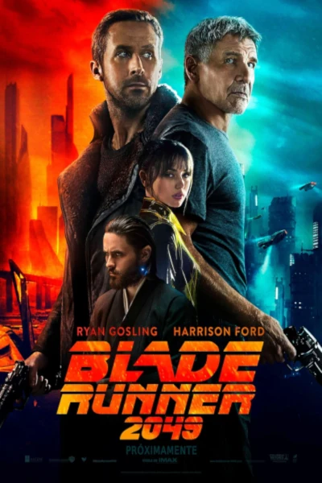

Predvodnik cijelokupnog žanra, rađen prema romanu Philipa K. Dick-a Do Androids Dream of Electric Sheep? Donosi nam replikante potpuno humanoidne strojeve, koje je nemoguće razlikovati od ostalog pučanstva izuzev Voight-Kampff testom.
Radnja filma
Velegradovi mračni poput grobnica, ljudi poluzombiji koji rade što moraju da opstanu u ovom zagađenom svijetu. Teške poslove rade replikanti, od ekspoatacije sirovina do vojnih pohoda. U filmu nije detaljno otkriveno kako su nastali, ali dajemo naslutiti putem genetskog inženjeringa. Radnja se vrti oko Deckarda, koji je i sam replikant, Blade Runner tj. osoba zadužena za umirovljenje (likvidaciju) drugih nepočudnih replikanata. Zadatak mu je umiroviti četiri Nexus-6, replikanta, koji ionako imaju vijek trajanja 4 godine. Njih predvodi Roy Batty, te su došli (silom) pronači način svog opstanka od glavnog i odgovornog šefa Tyrell korporacije, njihovog stvoritelja. Tijekom istrage Deckard susreće tajnicu Tyrella, Rachael, koja je i sama Nexus-6, a da toga nije ni svjesna, nakon što spozna, ona bježi od Tyrella. Kroz razne peripetije mračnog LA dvojac nakraju prevlada i odlazi u nepoznato, brineći sad i za svoju vrastitu sigurnost.
Glume:
Harrison Ford - Rick Deckard
Sean Young - Rachael
Rutger Hauer - Roy Batty
Edvard James Olmos - Gaff
Daryl Hannah - Pris
Film je polučio i vrlo uspješan nastavak, ali tek nakon 35 godina, Blade Runner 2049. Samom nastavku je prethodila internet kampanja kratkih filmića, kao uvod u radnju i uvod u sam svijet.
Zanimljivosti:
Replikanti u ovom svijetu su biološki stvorena bića, genetskim inženjeringom, za razliku androida, iz recimo Alien koji su sintetička bića.
Glazbu za film napisao je Vangelis i zasigurno je poznatija mnogima više od filma.
"Maybe the best American film ever made"
-Scott Derickson
Blade Runner 2049 (2017)
Režiser: Denis Villeneuve

35 godina kasnije, Blade Runner K, superiorni Nexus-9 tijekom istrage otkriva da je Rachael imala dijete i kreće cijela radnja. Od pronalaženja Deckarda, do činjenice da je Rachael već odavno mrtva, te da on nije to dijete, kako su ga tragovi navodili, do jednog lijepog završetka sage, kroz brojne prepreke.
Vrlo vizualan film u stilu Villeneuvea, koje je vrlo dobro prošao kod publike.
Glavne uloge: Ryan Gosling, Harrison Ford, Ana de Armas, Sylvia Hoeks, Robin Wright, Dave Bautista, Jared Leto.
Glazba: Hans Zimmer
Terminator RoboCop